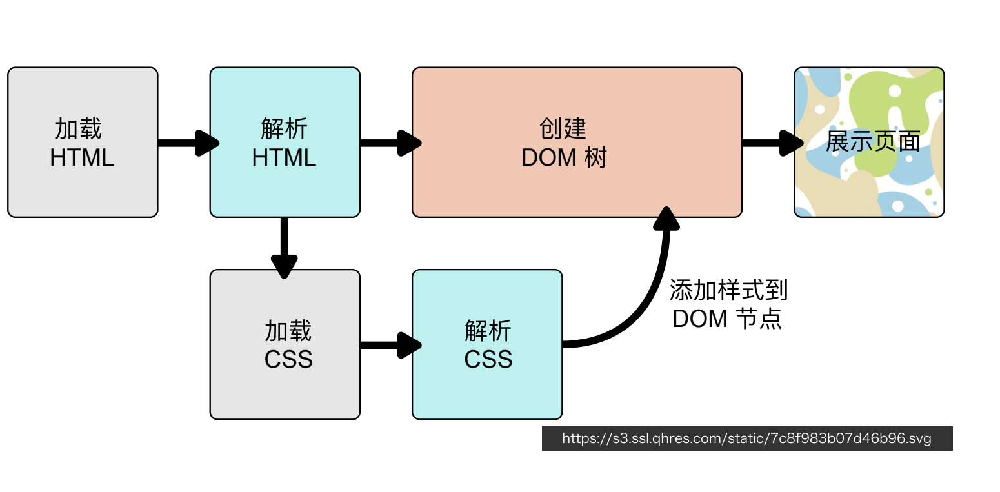

CSS
作者：陆离马鹿
2.1 CSS简介
2.1.1 基本功能与结构
Cascading Style Sheets
- 用来定义页面元素的样式
- 设置字体和颜色
- 设置位置和大小
- 添加动画效果
- 例：选择器
h1{/*h1-选择器Selector*/
color:white;/*属性Preperty,属性值Value*/
font-size:14px;/*属性和属性值合在一起为声明Declaration*/
}
/*选择器+声明块->规则*/
2.1.2 在页面中使用CSS
- 外链
- 嵌入
- 内联
2.1.3 CSS的工作原理

2.1.4 代码风格
- 每个声明一行
- 两条规则之间一条空行
2.1.5 调试CSS
- 开发者工具styles工具
2.2 基础选择器
2.2.1 选择器Selector
- 找出页面中的元素，以便给他们设置样式
- 使用多种方式选择元素
- 按照标签名、类名或ID
- 按照属性
- 按照DOM树中的位置
2.2.2 通配选择器
2.2.3 标签选择器
2.2.4 ID选择器
<header>
<h1 id="logo"> HTML 5</h1>
</header>
<style>
#logo {
font-size: 60px;
font-weight: 200;
}
</style>
2.2.5 类选择器
<ul>
<li class="done"> Learn HTML</li>
<li class="done"> Learn CSS</li>
</ul>
<style>
.done {
color: gray;
text-decoration: line-through;
}
</style>
2.2.6 属性选择器
<p>
<label>用户名: </label>
<input value="zhao" disabled>
</p>
<style>
input[disabled] {
background: #eee;
color: #999;
}
</style>
2.2.7 正则表达式选择
<style>
a[href^="#"] {<!-- 以#开头的href -->
color: #f54767;
background: 0 center/lem
url(top.svg) no-repeat;
padding-left: 1.1lem;
}
a[href$=".jpg"] {<!-- 以.jpg结尾的href -->
color: deepskyblue;
background: 0 center/lem
url(image.svg) no-repeat;
padding-left: 1.1lem;
}
</style>
2.2.8 伪类
- 不基于标签和属性定位元素
- 几种伪类
- 动态伪类
- 结构性伪类
- 动态伪类
<style>
a:link {
color:black;
}
a:visited {
color:gray;
}
a:active {
color:red;
}
a:hover {
color:orange;
}
:focus {
outline: 2px solid orange;
}
</style>
- 结构性伪类
<style>
li {
list-style-position:inside;
boder-bottom:1px solid;
padding:0.5em
}
li:first-child {
color:coral;
}
li:last-child {
boder-bottom:none;
}
</style>
2.2.9 组合器
将简单选择器组合起来
<style>
.error {
color:red;
}
input.error {<!-- 同时为input类型且class=error -->
border-color: red;
}
</style>

2.2.10 选择器组
body,h1,h2,h3,h4 {
margin:0;
padding:0;
}
[type="checkbox"],[type="radio"] {
box-sizing: border-box;
padding:0;
}
2.3 设置字体
2.3.1 设置
<style>
h1 {
font-family:Optima,Georgia,serif;
}
body {
font-family:Helvatica,sans-serif;
}
</style>
2.3.2 通用字体族
- Serif 衬线体：Geogia、宋体
- Sans-Serif 无衬线体：Arial、Helvetica、黑体、微软雅黑
- Cursive 手写体：Cafisch Script、楷体
- Fantasy：Comic Sans MS、Papyrus
- Monospace 等宽字体：Consolas、Courier、中文字体
使用建议： 1. 字体列表最后写上通用字体族 2. 英文字体放在中文字体前面
2.3.3 web Fonts
<style>
@font-face {
font-family:'Megrim';
src: url('/megrim.woff2') format('woff2'),
url('megrim.ttf') format('truetype')
}
@font-face {
font-family:'Buda';
src: url('/buda.woff2') format('woff2'),
url('/buda.ttf') format('truetype');
}
h1 {
font-family: Megrim,Cursive;
font-size:40px;
}
2.3.4 font-size
- 关键字
- small、medium、large
- 长度
- px、em（2em-字符大小的2倍）
- 百分数
- 相对于父元素字体大小
<style>
section {
font-size:20px;
}
section h1 {
font-size:2em;
}
section .note {
font-size:80%;
color:orange;
}
</style>
2.3.5 font-style
2.3.6 font-weight
100~900
normal=400 bold=700
2.3.7 line-height
2.3.8 font
font: style weight size/height family
2.4 设置文字样式
2.4.1 text-align
h1 {
text-align:left;
}
h2 {
text-align:center;
}
h3 {
text-align:right;
}
h4 {
text-align:justify;
}
2.4.2 spacing
2.4.3 text-indent
- 首行缩进
2.4.4 text-decoration
- 文字修饰
h1 {
text-decoration:none;
}
h2 {
text-decoration:underline;
}
h3 {
text-decoration:line-through;
}
h4 {
text-decoration:overline;
}
2.4.5 white-space
h1 {
white-sapce:normal;/*默认值,自动处理换行*/
}
h2 {
white-sapce:nowrap;/*强制不换行,直到文本结束或者遇到br对象*/
}
h3 {
white-sapce:pre;/*用等宽字体显示预先格式化的文本*/
/*不合并字间的空白距离和进行两端对齐,换行和其他空白字符都将受到保护*/
}
h4 {
white-sapce:pre-wrap;/*保留空白符序列,但是正常地进行换行*/
}
h5 {
white-sapce:pre-line;/*合并空白符序列,但是保留换行符*/
}
h6 {
white-sapce:inherit;
}
2.4.6 text-shadow
- text-shadow: color offset-x offset-y blur-radius
- 或text-shadow: offset-x offset-y blur-radius color
2.5 盒模型基础

2.5.1 width
- 指定content box宽度
- 取值为长度、百分数、auto
- auto由浏览器根据其他属性确定
- 百分数相对于容器的content box宽度
2.5.2 height
- 指定content box高度
- 取值为长度、百分数、auto
- auto取值由内容计算而来
- 百分数相对于容器的content box高度
- 容器有指定的高度时，百分数才生效
2.5.3 padding 内边距
- 指定元素四个方向的内边距
- 百分数相对于容器宽度
- 10px 四周
- 10px 20px 前一个为上下，后一个为左右
- 10px 20px 10px 20px
2.5.4 border
- 指定容器边框样式、粗细和颜色
- 三种属性
- border-width
- border-style: solid或dotted
- border-color
- 使用border属性统一设置 border: width style color
- 四个方向
- border-top
- border-right
- border-bottom
- border-left
2.5.5 margin
- 指定元素四个方向的外边距
- 取值可以是长度、百分数、auto
- 百分数相对于容器宽度
Margin collapse 垂直方向上margin会合并
- 允许有负margin
2.5.6 box-sizing: border-box
content-box
border-box
2.5.7 overflow
控制内容有溢出时候的行为
2.5.8 min-width & max-width & max-height & max-width
2.6 CSS中的盒子
2.6.1 DOM树与盒子
- 根据DOM树生成盒子
- 摆放盒子（Layout）
- 盒子尺寸和类型
- 定位模式（positioning scheme）
- 节点在DOM树中的位置
- 其他信息（窗口大小、图片大小等）
2.6.2 不同的盒子
块级盒子以及行级盒子


2.6.3 display
- block 块级盒子
- inline 行级盒子
- inline-block 本身是行级，可以放在行盒中；可以设置宽高；作为一个整体不会被拆散成多行
- none 排版时完全被忽略
2.7 盒子的效果
2.7.1 圆角border-radius
- 1个值、2个值、4个值：分别表示4个角
- A/B 表示水平与垂直的圆角大小
- 使用百分比表示圆角大小占长/宽的比
2.7.2 background
- background-color 默认值为透明transparent
- background-image: url(/azis.png)
- background-repeat: repeat/no-repeat/repeat-x/repeat-y 背景图是否重复
- background-position: x y 背景图的位置，x,y为左上角的值
- top/left/right/center/bottom
- top left/top right/bottom left/bottom right
- len-x len-y
- percent-x percent-y 原图片的百分比
- bottom len_1 right len_2 相对于边缘的偏移量
- bakcground-size 背景图大小
- length.x length.y 能单独使用auto
- percentage 相对于背景区域的百分比，有x,y两个方向的值，能单独使用auto
- cover 保持纵横比并将其所方程完全覆盖背景区域的最小大小
- contain 保持图像的纵横比并将图像所方程适合背景区域的最大大小
2.7.3 background-clip
背景图的覆盖范围
- bcakground-clip: border-box
- bcakground-clip: padding-box
- bcakground-clip: content-box
2.7.4 background属性
2.7.5 box-shadow
使用逗号隔开就能设置多重阴影
2.8 行高和垂直对齐

2.8.1 行级盒子的高度

2.8.2 vertical-align
vertical-align:baseline
vertical-align:middle
vertical-align:top
vertical-align:bottom
vertical-align:text-top
vertical-align:text-bottom
vertical-align:0px/*baseline往上的偏移*/
2.9 CSS继承
2.9.1 选择器的特异度Specificity
计算元素个数，如下图中分别为122与22

2.9.2 属性覆盖
高优先级的会覆盖低优先级的
2.9.3 继承
某些属性会自动继承其父元素的计算值，除非显示指定一个值
<p>
This is a
<em>test</em>
of
<strong>inherit</strong>
</p>
<style>
body {
font-size:20px;
}
p {
color: blue;
}
em {
color:red;
}
</style>
2.9.4 显式继承
2.9.5 初始值
- CSS中，每个属性都有一个初始值
- 可以使用initial关键字显式重置为初始值
- background-color:initial
2.10 CSS中的值和单位
2.10.1 CSS中的值

2.10.2 长度

2.10.3 其他
- 颜色 RGB： #RRGGBB/rgb(r,g,b) HSL[色相Hue，饱和度Saturation，亮度Lightness]：hsl(h,s,l)
- alpha 透明度 0完全透明，1完全不透明 RGBA： #RRGGBBAA，rgba(r,g,b,a)，hsla(h,s,l,a)
- 时间 ms，s
3 CSS布局
3.1 CSS布局概述
3.1.1 布局相关技术
- 常规流Normal Flow
- 根元素、浮动和绝对定位的元素会脱离常规流
- 其他元素都在常规流之内（in-flow）
- 常规流中的盒子，在某种排版上下文中参与布局
- 行级排版上下文（Inline Formatting Context, IFC）
- 只包含行级盒子的容器会创建一个IFC
-
IFC内的排版规则
- 盒子在一行内水平摆放
- 一行放不下时换行显示
- text-align决定一行内盒子的水平对齐
- vertical-align决定一个盒子在行内的垂直对齐
- 避开浮动（float）元素
overflow-wrap:break word 单词内可换行
- 块级排版上下文（Block Formatting Context, BFC） - 某些容器会创建一个BFC- 根元素
- 浮动、绝对定位、inline-block
- Flex子项和Grid子项
- overflow值不是visible的块盒 - BFC内的排版规则
- 盒子从上到下摆放
- 垂直margin合并
- BFC内盒子的margin不会与外面的合并
- BFC不会和浮动元素重叠
- 有时产生匿名的块级盒子 - Table排版上下文 - Flex排版上下文 - Grid排版上下文
- 浮动
- 绝对定位
- 行级排版上下文（Inline Formatting Context, IFC）
3.2 Flexible Box I
一种新的排版上下文
- 它可以控制子级盒子的：
- 摆放的流向（\(\leftarrow,\rightarrow,\uparrow,\downarrow\)）
- 摆放顺序
- 盒子宽度和高度
- 水平和垂直方向的对其
- 是否允许折行
3.2.1 流向与换行
flex-direction:row/*flex-direction控制排版内的流向*/
flex-direction:row-reverse
flex-direction:column
flex-direction:column-reverse
3.2.2 Flexibility
- 可以设置子项的弹性：当容器有剩余空间时，会伸展；容器空间不够时，会收缩。
- flex-grow 有剩余空间时的伸展能力
- flex-shrink 容器空间不足时收缩的能力
- flex-basis 没有伸展或收缩时的基础长度
- flex属性
3.3 Flexible Box II
3.3.1 justify-content 主轴方向对齐
justify-content:flex-start;
justify-content:flex-end;
justify-content:center;
justify-content:space-between;
justify-content:space-around;
justify-content:space-evenly;
3.3.2 align-items 侧轴方向对齐
align-items:flex-start;
align-items:flex-end;
align-items:center;
align-items:stretch;/*拉伸至与父容器同高,为默认值*/
align-items:baseline;/*文字基线对齐*/
3.3.3 align-self 子元素对齐方式
align-self:flex-start;
align-self:flex-end;
align-self:center;
align-self:stretch;
align-self:baseline;
3.3.4 align-content 多行在侧轴方向对齐
align-content:flex-start;
align-content:flex-end;
align-content:space-between;
align-content:stretch;
align-content:space-around;
3.3.5 order 顺序
- 默认值为0
- 按照order从小到大的顺序来排列
3.4 Grid布局 I
- flex-box是一维单向的布局方式
- grid是二维的布局方式
3.4.1 display:grid
- 使元素生成一个块级的Grid容器
- 使用grid-template相关属性将容器划分为网格
- 设置每一个子项占哪些行
-
划分网格
3.4.2 Grid line网格线, Grid area网格区域


- 命名网格线：在指定行列宽高时命名
.preview {
grid-template-columns:
[left] 100px [center] 1fr [right]
grid-template-rows:
[top]
1fr
[middle]
1fr
[bottom]
}
.a {
grid-area: top/left/bottom/center;
}
- 命名网格区域：使用grid-template-areas命名
.preview {
display:grid;
grid-template-columns:200px 1fr;
grid-template-rows:50px
1fr
50px;
grid-template-areas:"header header"
"aside main"
"footer footer";
}
.a {
grid-area:header;
}
3.5 Grid布局 II
3.5.1 grid-gap
3.5.2 justify-items 行方向对齐
3.5.3 align-items 列方向对齐
3.5.4 align-self/justify-self
控制元素在块内的对齐方式
3.5.5 align-content/justify-content
Grid块没有占满全部区域时使用align-content/justify-content
.preview {
grid-template-rows:100px 100px;
grid-template-columns:100px 100px 100px;
}
justify-content:center;
align-content:center;
justify-content:end;
align-content:end;
justify-content:space-between;
align-content:space-between;
justify-content:space-around;
align-content:space-around;
3.6 表格样式
3.6.1 宽度设置
table th {
width 100px;
}
table th,
table td {
width 100px;
}
table {
width:200px;
table-layout:fixed;
}
table th {
width: 100px;
}
3.6.2 边框设置
3.6.3 display:table 表格
nav {
display:table;
width:100%;
background:lightblue;
}
nav a {
display:table-cell;
text-align:center;
}

3.7 浮动
3.7.1 浮动
- 浮动对布局的影响
- 浮动元素脱离常规流，漂浮在容器左边或右边
- 浮动元素贴着容器边缘或另外的浮动元素
- 浮动元素不会影响常规流里面的块级盒子
- 浮动元素后面的行盒会变短以避开浮动元素
- clear
- 将浮动的影响控制在容器内：不会与浮动元素重叠
- Block Formatting Context
- BFC的高度包含浮动元素
- BFC不会和浮动元素上下重叠
- 创建BFC
- overflow非visible
- float、inline-block、绝对定位
- Block Formatting Context
3.8 定位
3.8.1 position属性
-
position:relative
- 在常规流里面布局
- 相对于自己本应该在的位置进行偏移
- 使用top, left, bottom, right设置偏移长度，如top:20px, top:50%
- 流内其他元素当它没有偏移一样布局
-
position:absolute
- 脱离常规流
- 相对于最近的非static祖先定位
- 不会对流内元素布局造成影响
- 使用top, left, bottom, right设置偏移长度，如top:20px, top:50%
- 不设置top, left则默认在左上角（0位置）
- position:fixed
- 相对于Viewport定位
- 不会随页面滚动发生位置变化
3.9 堆叠层级
3.9.1 z-index
- 为定位元素指定其在z轴的上下层级
- 用一个整数表示，数值越大，越靠近用户
- 初始值为auto，可以为负数、0、正数
3.9.2 堆叠上下文
一个堆叠上下文的元素才能相比较 若不同则看上下文的层级
3.9.3 绘制顺序
- 在每一个堆叠上下文中，从下到上：
- 形成该上下文的元素的border和background
- z-index为负值的子堆叠上下文
- 常规流内的块级元素
- 浮动元素
- 常规流内行级元素
- z-index为0的子元素或子堆叠上下文
- z-index为正数的子堆叠上下文
4 CSS高级
4.1 CSS Transform
4.1.1 transform 变形
- 对元素进行平移、旋转、缩放、倾斜
- translate
- rotate
- scale
- skew
- transform不会对其他元素布局产生影响
- translate
.emoji {/*向右下角平移*/
transform:translate(100px,100px)
}
.emoji {
transform:translateX(100px);
}
.emoji {
transform:translateY(-1em);
}
.emoji {
transform:translate(100%,100%);
}
- rotate
.emoji {/*顺时针旋转*/
transform:rotate(90deg);
}
.emoji {
transform:rotate(0.5turn);
}
.emoji {
transform-origin:0 0;
transform:rotate(-50deg);
}
.emoji {
transform-origin:0 0;
transform:rotate(360deg);
}
- Scale
.emoji {
transform:scale(2);
}
.emoji {
transform:scale(3,0.5);/*横纵方向的scale*/
}
.emoji {
transform-origin:0 0;/*指定基准位置*/
transform:scale(4);
}
.emoji {
transform-origin:0 0;
transform:scaleY(2);/*可以使用scaleX,scaleY分别对两个方向做出改变*/
}
- skew 扭曲
.emoji {/*旋转,有x,y参数*/
/*在x,y方向分别倾斜*/
transform:skew(30deg)
}
.emoji {
transform:skewY(50deg);
}
.emoji {
transform:skew(30deg,20deg);
}
- perspective 视角
- translate3d 在3d空间中的平移，多了z轴的偏移量
.emoji {/*perspecctive视角,小则广角*/
transform:perspective(100px);
translate3d(100px,100px,20px);
rotateY(80px);
}
- 多次操作
.emoji {
transform:translateX(100px)
rotate(90deg)
}
.emoji {
transform:rotate(90deg)
translateX(100px)
}
/*两种结果不同,原因为每个操作均以元素自身的坐标轴做标准*/
4.2 CSS Transition
4.2.1 transition 过渡
- 指定从一个状态到另一个状态时如何过渡
- 动画的意义：告诉用户发生了什么
- transition属性：
- transition-property 哪个属性需要过渡
- transition-duration 过渡时间
- transition-timing-function
- transition-delay
.box {
height: 200px;
background: coral;
transition-property: height;
transition-duration: 1s;
transition-timing-function: linear;
}
.box:hover {/*hover为鼠标悬停时动画效果*/
height: 400px;
}
- 也可以将几个参数集中书写
.box {
height: 200px;
background: coral;
transition: all 1s linear;
}
.box:hover {
height: 400px;
background: green;
}
4.2.2 transition-delay
.box {
height: 200px;
background: coral;
transition: height 1s linear, background 2s linear 1s;
/*最后一个参数为delay时间*/
}
.box:hover {
height: 400px;
background: green;
}
4.2.3 transition-timing-function
- linear
- ease
- ease-in
- ease-out
- ease-in-out
- steps(4)
steps(k)
4.3 CSS Animation
4.3.1 animation
- 可以实现更复杂的样式变化效果
- 使用方法
- 定义关键帧样式
- 应用动画到元素上
@keyframes down {
from {
margin-top: 0;
opacity: 1;
}
50% {
margin-top: 0.5em;
opacity: 0.3;
}
to {
margin-top: 0;
opacity: 1;
}
}
.scroll-down {
position: fixed;
top: 50%;
left: 50%;
transform: translate(-50%, -50%);
font: normal normal 100px/1 Helvetica;
color: #f66;
animation: down 1s ease infinite;
animation:normal;/*reverse,alternate 逆转,循环*/
}
4.3.2 animation属性
- animation-name
- animation-duration
- animation-timing-function
- animation-delay
- animation-iteration-count
- animation-direction 表示正序/倒序/其他顺序播放
4.4 响应式设计
响应式设计：同一个页面可以适应不同屏幕大小设备的设计方案
- 设置viewport
```html
<meta name="viewport" content="width=device-width,initial-scale=1.0">
```
- 图片尺寸设置
- 背景图片
- background-size:cover
- background-size:contain
- 背景图片
-
media query
- 针对不同的屏幕尺寸，应用不同的样式
- 可以查询的media
- width/height
- device-width/device-height
- device-pixel-ratio
- orientation
-
使用不同尺寸的图片
-
2rem 2倍根元素中font-size大小
4.5 处理CSS兼容性
4.5.1 了解浏览器支持情况
4.5.2 不同浏览器使用不同的样式
- 层叠cascading
浏览器hack原理-层叠 同一个属性，后面书写的值覆盖前面书写的值，对浏览器无效段的属性或属性值会被忽略
- 条件注释
浏览器hack原理-条件注释
- 浏览器怪癖
浏览器hack原理：浏览器怪癖
.container {
height:100px;
height:200px\9; /*IE6-9*/
*height:300px; /*IE 6,7*/
_height:400px;/*IE 6*/
}
-
浏览器前缀
- Chrome/SafariW:-webkit-
- Microsoft:-ms-
- Mozilla:-moz-